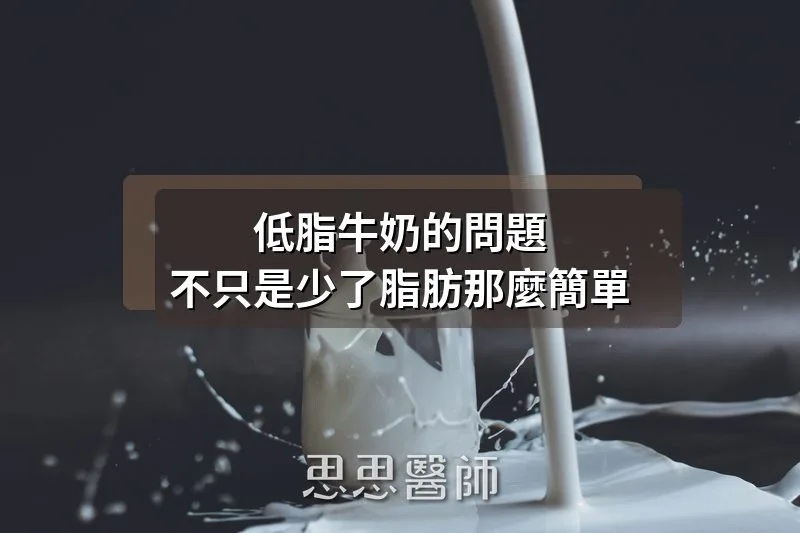

低脂牛奶的問題，不只是少了脂肪那麼簡單

今年一月，美國政府發布了最新一版的《2025-2030 美國飲食指南》（Dietary Guidelines for Americans），其中有一個改變在營養學界引發了不小的討論：超過四十年來第一次，指南不再把「低脂或脫脂」列為乳製品的唯一建議選項，而是明確表示各種脂肪含量的乳製品，包括全脂牛奶，都可以納入健康飲食模式。這個改變讓我想藉這個機會認真討論一個長期被認為是「常識」的問題：喝低脂牛奶真的比較健康嗎？
在回答這個問題之前，先來釐清一個常見的誤解：低脂牛奶的含糖量真的比全脂牛奶高嗎？很多人聽說功能醫學醫師反對低脂牛奶，以為去脂肪的過程中廠商會加糖來補回口感。實際上標準製程完全不加糖。牛奶脫脂是透過離心分離機完成的，高速旋轉時脂肪因密度較低往中心聚集、被抽出，剩下的液體就是脫脂奶，整個過程是純粹的物理分離。
那為什麼含糖量還是略高？這是濃縮效應的結果，脂肪約佔全脂牛奶重量的 3.25%，把它拿走之後，剩餘液體的乳糖比例自然略微提高。實際數字是每 100g 大約多 0.4 到 1.2 克乳糖，差距非常小，臨床上幾乎不構成影響。但這裡有一個比較值得關注的問題：美國部分廠商（在台灣較少見，進口品需留意）會在脫脂奶中加入脫脂奶粉（NFDM）來補回口感。奶粉的製程需要高溫噴霧乾燥，這個過程會使膽固醇氧化，產生氧化膽固醇（oxysterols）。這和天然全脂牛奶中的天然膽固醇性質完全不同，在動物實驗中被認為與血管損傷有關。這才是功能醫學醫師真正在意的問題，而不只是那 1 克乳糖的差異。
更值得關注的，是脂肪被移除後你同時失去了什麼。
2019 年發表在《American Journal of Clinical Nutrition》的一項統合分析，納入將近 21,000 名兒童的數據，結果顯示：喝全脂牛奶的孩子，過重或肥胖的風險比喝低脂牛奶的孩子低了 39%，而且每高 1% 的牛奶脂肪含量，就與肥胖風險降低 25% 相關。2026 年多倫多大學的追蹤研究更進一步發現，5 歲時喝全脂牛奶的孩子，到 8 歲時肥胖風險比喝脫脂牛奶的孩子低了將近 70%。這些數字和過去幾十年的飲食建議方向剛好相反。
機轉方面也有一個關鍵發現。全脂乳製品中含有兩種特殊的奇數碳飽和脂肪酸：十五碳酸（C15:0）和十七碳酸（C17:0），幾乎只存在於全脂乳製品中，脫脂牛奶裡幾乎偵測不到。2018 年發表在《PLOS Medicine》的大型前瞻性研究發現，體內這兩種脂肪酸濃度較高的人，罹患第二型糖尿病的風險降低了約 30%。換句話說，選擇脫脂牛奶的人，同時放棄了這兩種乳製品獨有的保護性成分。
脂肪還有一個常被忽略的功能，延緩乳糖吸收速度。牛奶中的脂肪會刺激腸道分泌 CCK 和 PYY 荷爾蒙，延緩胃排空，讓乳糖進入血液的速度更平緩。移除脂肪後，乳糖吸收加快，血糖曲線變得更陡。雖然牛奶整體升糖指數不高，但對胰島素敏感度已經下降的人來說，這個差異仍然有臨床意義。
回到開頭提到的指南改變。有一點值得補充：這次《2025-2030 飲食指南》的修訂過程本身充滿爭議。負責科學審查的獨立委員會（DGAC）原本在報告中建議維持低脂乳製品的優先地位，但最終的官方指南卻推翻了委員會的建議，這在美國飲食指南的歷史上是極為罕見的做法，也引發了部分營養學者的批評。這個背景說明，這份指南的改變背後有複雜的政治因素，並不單純只是科學數據的反映。
但科學本身的方向是清楚的：現有的觀察性研究和機轉研究，並不支持「低脂乳製品比全脂更有益代謝健康」這個結論，在肥胖和糖尿病風險方面尤其如此。如果你選擇喝牛奶，挑全脂的可能比你想像的更合理。
參考資料
1. Vanderhout et al. Whole milk compared with reduced-fat milk and childhood overweight (AJCN, 2019)
3. Dietary Guidelines for Americans, 2025-2030 (USDA/HHS, January 2026)
（本文由我規劃架構與觀點，並協同 AI 校正與潤飾語句）
 空腹小雞跟思思醫師一起斷食，順便養一隻小雞來養小雞 →
空腹小雞跟思思醫師一起斷食，順便養一隻小雞來養小雞 →
好朋友早餐信
一週一封：《健康駭客週報》這集的研究重點，加上家醫專欄這週的新文章。免費，隨時可以退訂。
延伸閱讀

吃水果的盲區，不只是你想的那樣
血糖機測葡萄糖不測果糖，水果同含三種糖並經蔗糖分解，果糖進肝臟繞過血糖控制轉化為脂肪和尿酸，血糖讀數只揭示代謝故事的一部分。

飯後的血液指標，有時候比飯前更重要
飯後血液指標反映胰島素反應與代謝控制的實際狀況，往往比飯前數值更能說明真實身體狀態。

為什麼吃油不會變脂肪，吃糖反而最危險
血液三酸甘油酯的主要來源是肝臟用糖製造的，而非直接來自食物脂肪，吃糖越多製造越多。